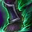
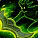
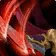

浩劫 DH PvP 判断训练器
浩劫的判断不是「够不够得着」，是该不该现在冲上去。


为什么？机动性解决了距离，也带来了新问题想去哪就去哪，但去错了就回不来▸但这带来了另一个问题：冲进去容易，出来难。你的位移大多是「向前」的，一旦冲进对面三个人中间，剩下的冷却未必够你出来。这是浩劫最常见的死法。
该不该开？勾一下就知道
勾掉几条，就有多少胜算。
三个时钟
浩劫的节奏挂在这三个数字上。
但它是引导技能——期间你站着不动，这跟浩劫「一直在动」的直觉相反。所以开它之前要确认这几秒是安全的。
变身期间伤害大幅提升，Chaotic Transformation 让它立刻重置刃舞和眼棱的冷却。
所以它不只是加伤害，是「让你多打一轮」——开的时机要配合那两个技能的冷却状态。
Pitch Black（40/50）把
本版定盘（top50 三对三实测）

英雄天赋：奥达奇掠夺者 Aldrachi Reavertop50 里 50 人全用，邪能灼痕 0 人▸奥达奇掠夺者（Aldrachi Reaver）50/50，邪能灼痕（Fel-Scarred）是 0。这不是推荐，是唯一解。
这条线围绕 Reaver's Glaive 展开——消耗灵魂碎片后，你的下一次
Blood Moon（50/50）—— 全员必带。让 Consume Magic 变成范围驱散并生成灵魂碎片，把一个单体功能技能变成了范围解场手段。
Glimpse（49/50）——
Reverse Magic（30/50）移除全队有害魔法效果并反弹、Detainment（20/50）让
Detainment 值得注意：它让禁锢变成「把人移出战斗」，跟德鲁伊的